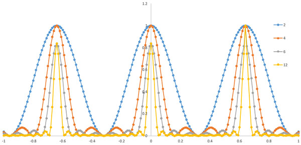

回折-06
ｎ個のスリットの回折-指数関数編
スリットがｎ個の場合の重ね合わせは，
\(\Large Y = \displaystyle \sum_{ m = 1 }^{ n } A \ e^{ i ( \alpha + (m-1) \beta)} \)
を計算すればよいわけです．
\(\Large \begin{eqnarray} Y &=& A \ e^{ i \alpha} + A \ e^{ i ( \alpha + \beta)} + A \ e^{ i ( \alpha + 2\beta)} + \cdots + A \ e^{ i ( \alpha + (n-1) \beta)} \\ &=& A \ \ e^{ i \alpha}
\ \left[ 1+ e^{ i \beta} + e^{2 i \beta} + \cdots + e^{ (n-1) i \beta} \right] \end{eqnarray} \)
となります．このYに，\(\Large e^{ i\beta} \)，を掛けたものは，
\(\Large Y \cdot e^{ i \beta} = A \ e^{ i \alpha} \ \left[ e^{ i \beta} + e^{2 i \beta} + \cdots + e^{ n i \beta} \right] \)
となるので，この二つの式の差分をとると，
\(\Large Y \cdot e^{ i \beta} - Y = A \ e^{ i \alpha} \ \left[ e^{ n i \beta}-1 \right] \)
となります．従って，
\(\Large Y = A \ e^{ i \alpha} \frac{ e^{ n i \beta}-1 }{e^{i \beta} -1} \)
となります．式を変形して，
\(\Large Y = A \ e^{ i \alpha} \frac{e^{ \frac{n i \beta}{2}} \left[ e^{ \frac{n i \beta}{2}} - e^{ - \frac{n i \beta}{2}} \right]}{e^{ \frac{ i \beta}{2}} \left[ e^{ \frac{ i \beta}{2}} - e^{ - \frac{ i \beta}{2}} \right] } \)
となります．括弧の中はオイラーの公式により三角関数で表すことができるので，
\(\Large \begin{eqnarray} Y &=& A \ e^{ i \alpha} \frac{ e^{ \frac{n i \beta}{2}} \cdot \sin \frac{n \beta}{2}} {e^{ \frac{ i \beta}{2}} \cdot \sin \frac{ \beta}{2}} \\ &=& A \ exp \left[ i \left( \alpha + \frac{n-1}{2} \beta \right) \right] \frac{ \sin \frac{n \beta}{2}} { \sin \frac{ \beta}{2}} \end{eqnarray} \)
となります．虚数部分に着目すれば，最初の指数部分はsinとなります．従って，三角関数の場合と一致します．． さらに，時間項を含むので，振幅はそれ以外となります．従って，
\(\Large I \simeq \left[ \frac{ \sin \left( \frac{n \beta}{2} \right)}{ \sin \frac{ \beta}{2}} \right]^2\)
となります．図示すると，

となります．図を見るとわかるように，
ピークの位置はｎによらず，同じ
ｎが増えるとシャープさが増してくる
シャープになっても周辺の小さいピークが発生する
ことがわかります．